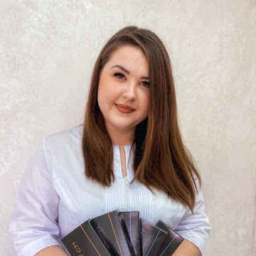
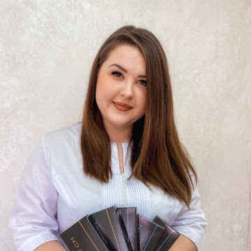

Резюме
 

Афанасьева Алина
Дата рождения: 24.03.1991
Адрес: штрассе 37-39
Телефон: +49151724...1
Email: afalina190@gmail.com
Цель: Получение работы медсестры
Образование:
- 2006-2010 гг. – Николаевский базовый медицинский колледж, Сестринское дело.
- 2007-2011гг. - Черноморский государственный университет имени Петра Могилы, здоровье
человека, физическое воспитание и спорт, физическая реабилитация.
- 2011-2014гг. - Николаевский национальный университет имени В.О. Сухомлинского, биология,
лаборант в отрасли биологических исследований.
- 2011-2012гг. - Николаевский политехнический институт, физическая реабилитация.
Опыт трудовой деятельности:
- 2011-2013 г. – городская поликлиника No3, медсестра невропатолога.
- 2013-2019гг. - Поликлиника больницы скорой медицинской помощи, медсестра по лечебной
физической культуре.
- 2017-2022гг. - Частный предприниматель, ОКВЕД 86.90 (медсестра, косметолог);
68.20 (сдача в аренду собственного или арендованного имущества).
- 2019-2022гг. - Николаевский областной центр профилактического осмотра, медсестра.
Основные обязанности:
- Набор лекарств;
- Сборка и установка капельниц;
- Выполнение внутривенных, подкожных и внутримышечных уколов;
- Забор крови;
- Передача анализов в лабораторию;
- Учет медикаментов;
- Получение лекарственных препаратов на отделение;
- Ведение документации;
- Проведение лечебной гимнастики;
- Проведение физиотерапевтических процедур, массажей.
Дополнительные данные:
- Сертификат «Косметология» 2018г;
- Удостоверение о повышении категории медсестры;
- Курсы повышения квалификации «реабилитационной медсестры»;
- Умение проводить сестринские манипуляции;
- Навыки проведения профосмотров;
- Уважительное и учтивое отношение к пациентам;
- Профессиональная грамотность;
- Разборчивый почерк;
- Доброжелательность;
- Вежливость;
- Ответственность;
- Дисциплинированность.